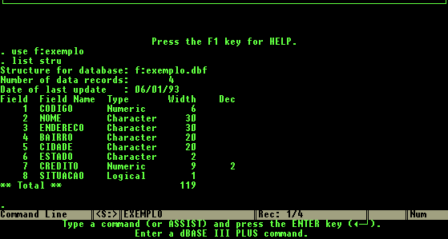
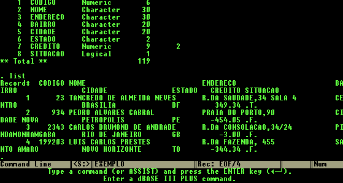

Importador de arquivos xBase
O padrão de arquivos XBase [.DBF] apesar de largamente difundido em aplicações de pequeno porte, oferece pouca confiabilidade. Isso torna freqüente a substituição destes aplicativos por sistemas profissionais, o que implica na conversão das informações.
Existem vários meios para converter estas bases para um arquivo texto que em seguida podem ser lidos por um programa COBOL especialmente elaborado mas o DBFCOBOL é o meio mais rápido e completo.
Formato: DBFCOBOL FileName
Onde FileName é o nome do arquivo a ser convertido [FileName.DBF]. Serão gerados dois arquivos: o primeiro [FileName.CPY], contendo a descrição do arquivo na linguagem COBOL (FD) e o segundo [FileName.TXT], contendo os dados no formato texto como os campos numéricos devidamente ajustados para a linguagem COBOL.
Exemplo:
Utilizando o dBase III+ ®, podemos observar a estrutura e o conteúdo do arquivo EXEMPLO.DBF que tem 4 registros.
|
 |
|
|
|
 |
Executando o DBFCOBOL:
COBOLware C:\COBOLware>DBFCOBOL EXEMPLO DBFCOBOL Conversor de arquivos xBASE para COBOL COBOLware 6.1 Copyright (C) 1984-2020 COBOLware Services Ltda. Verificando estrutura de EXEMPLO.DBF... Trecho de FILE SECTION codificado em: EXEMPLO.CPY Convertendo arquivo dBASE III+ (R) EXEMPLO.DBF... Dados em formato texto em: EXEMPLO.TXT 4 Lidos de EXEMPLO.DBF 0 pré-deletados 4 gravados COBOLware C:\COBOLware> |
Resultados:
|
EXEMPLO.CPY |
|
*********************************************************** |
|
EXEMPLO.TXT |
000023+TANCREDO DE ALMEIDA NEVES R.DA SAUDADE,34 SALA 4 CENTRO BRASILIA DF000034934+Y 000934+PEDRO ALVARES CABRAL PRAIA DO PORTO,90 CIDADE NOVA PETROPOLIS PE000045405-N 002343+CARLOS DRUMOND DE ANDRADE R.DA CONSOLACAO,34/24 PINDAMONHAMGABA RIO DE JANEIRO GB000000300-N 199203+LUIS CARLOS PRESTES R.DA FAZENDA, 455 SANTO AMARO NOVO HORIZONTE TO000034434-N |